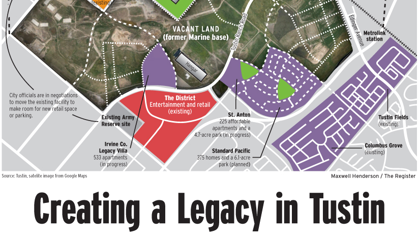
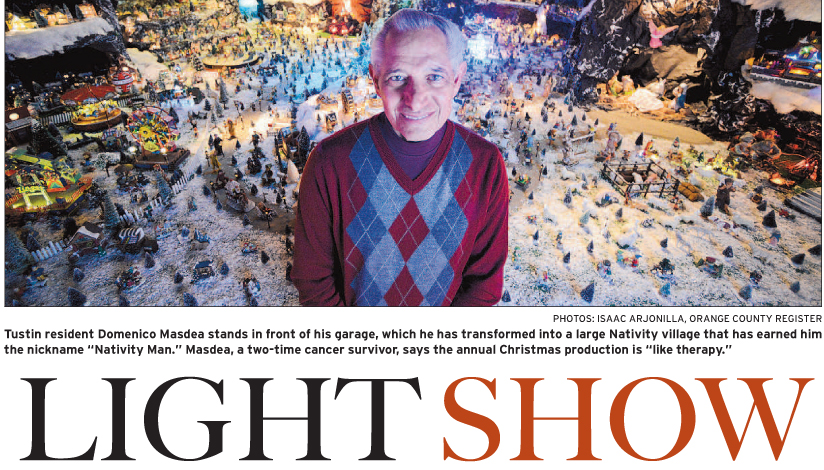
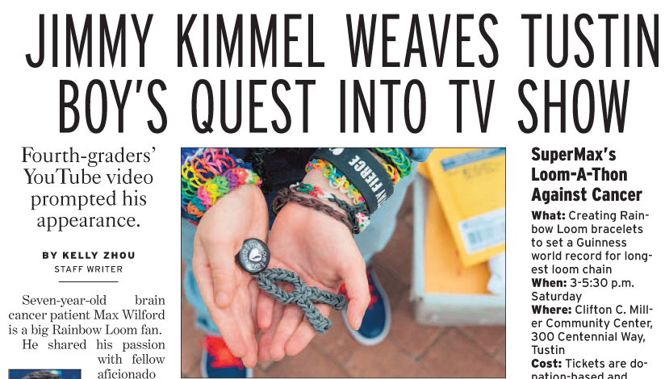
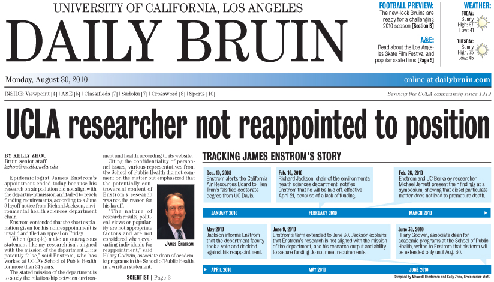

What will happen to the base?
OC Register Local B2.
Comprehensive news story on the history and plans for the vacant former Marine Corps Air Station base in Tustin, which include apartments, retail stores, sprawling parks and more. Story involved months of researching city documents and interviews.
The Nativity man
Tustin News A1.
In-depth feature on a cancer survivor who produces a complex Nativity scene in his garage each year and hosts a canned food drive. Thousands come visit the display, which includes an estimated 500-600 Christmas lights and uses 200 amps of electricity.
A boy, a loom and a dream
OC Register Local B1.
A 7-year-old boy with brain cancer aims to build the world's longest Rainbow Loom chain, by holding a Rainbow Loom-a-thon in lieu of a birthday party. He lands on "Jimmy Kimmel Live!" and meets Iron Man. This was one in a series of stories about the Rainbow Loom marathon.
Remembering V-J Day
OC Register Local B1.
Historical feature on the former Marine Corps base during World War II. On Victory over Japan Day, a former U.S. Navy wife recalls events on the base and the challenges of life during war. Included the now-vacant hangars, two of the world's largest freestanding wooden structures.
The details of air pollution research
Daily Bruin News A1.
Investigative story on an UCLA epidemiologist and whether or not he was not reappointed to his position because his department did not support his research. Following the publication of this story, the School of Public Health extended his appointment for the time being.
UCLA targets higher tuition fees

Daily Bruin News A1.
An in-depth story regarding UCLA's increased effort to recruit international students, despite being an in-state university. Included demographic statistics, admissions data and interviews. Accompanied by interactive online graphic.
Other published articles:
OC Register articles covering Tustin, Dana Point, Laguna Niguel and other areas from June 2013 to present 2015.
TakePart.com stories covering politics, education, environment, health and other topics from January 2012 to August 2013.
UCLA Daily Bruin stories covering campus events, national news and other issues from September 2009 to June 2013.